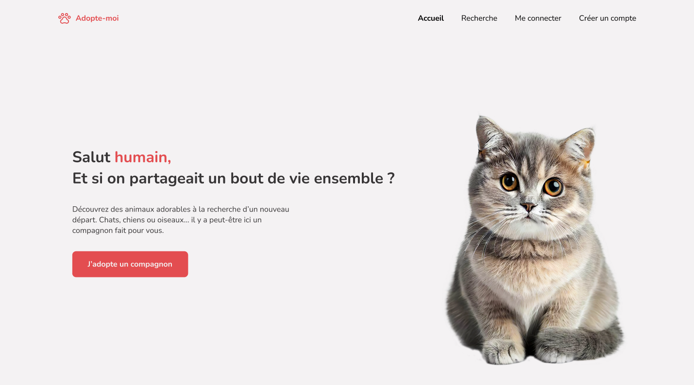

Florian DA ROCHA
Développeur Web Full-Stack
Je transforme des idées en expériences digitales modernes.
Développeur web passionné, j'aime transformer des idées en projets concrets et bien pensés.
Après plusieurs années dans la conception et le design des cuisines, j'ai choisi de me réorienter vers le développement pour donner vie à mes créations de bout en bout.
Guidé par la précision et la recherche de performance du sport automobile, j'accorde autant d'importance à la technique qu'à l'esthétique.
Curieux, rigoureux et motivé, j'évolue chaque jour en cherchant à concevoir des expériences web claires, rapides et modernes.
Mes compétences
Langages
Frameworks
MES PROJETS
Une sélection de mes créations
Me contacter
Intéressé par mon profil ? Voici comment me joindre :